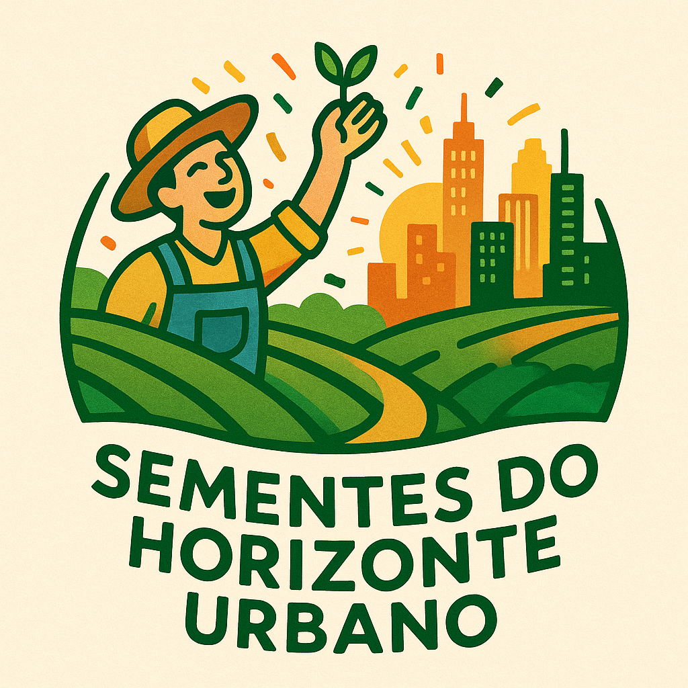
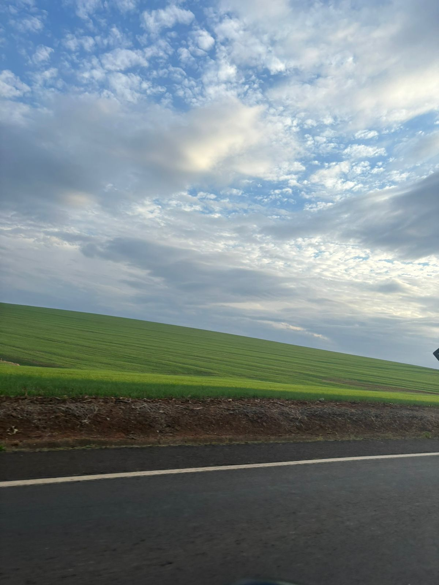
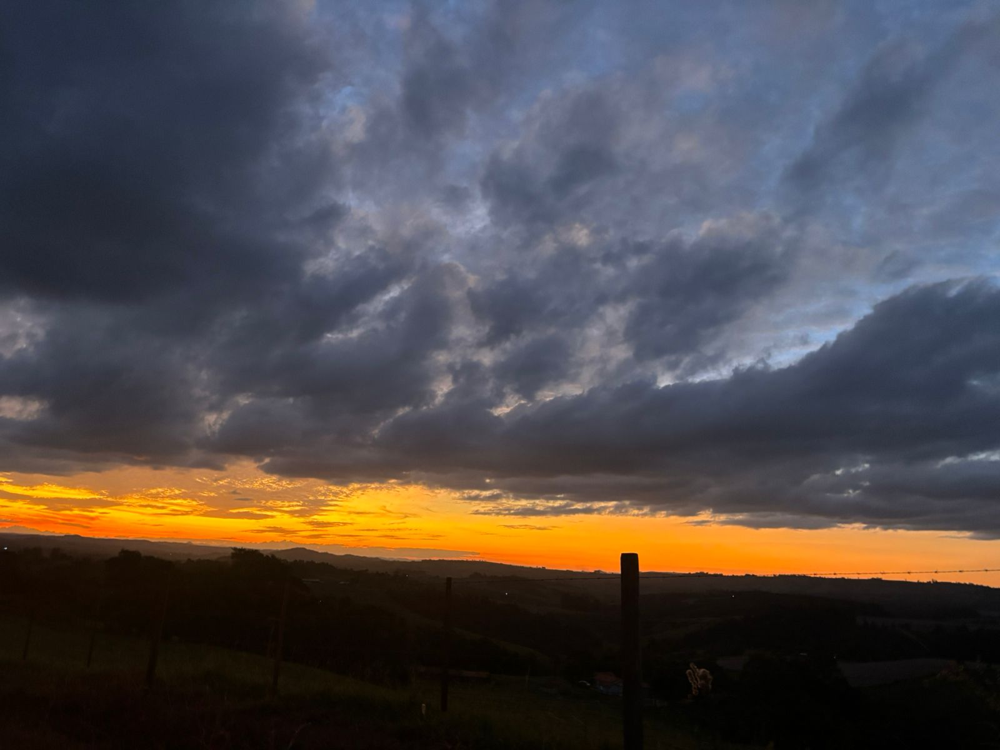
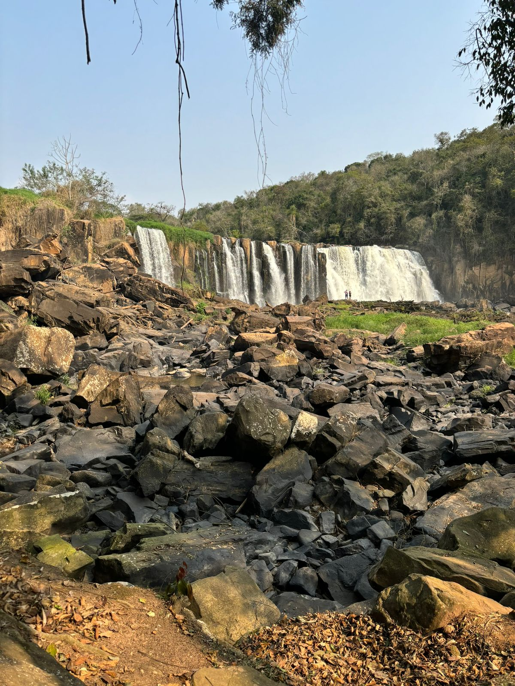
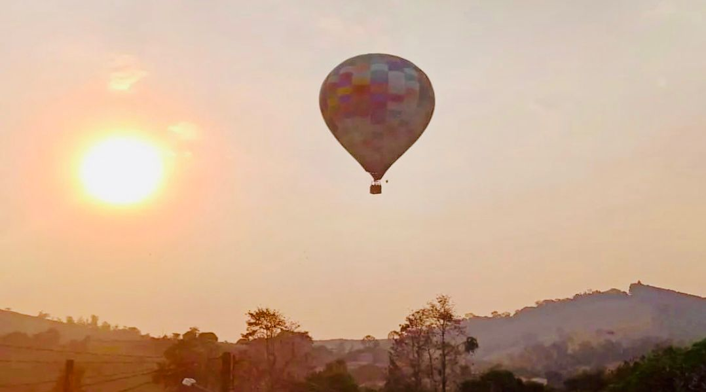
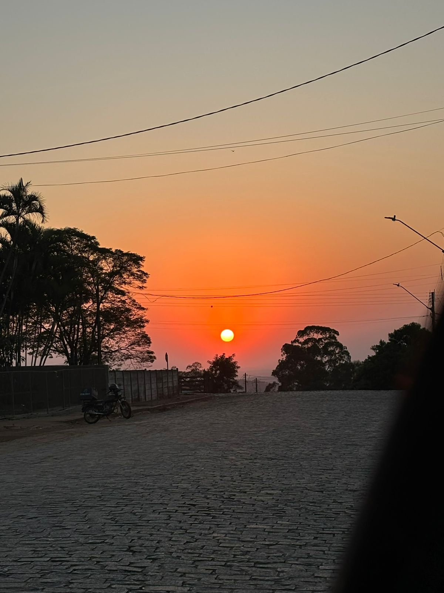
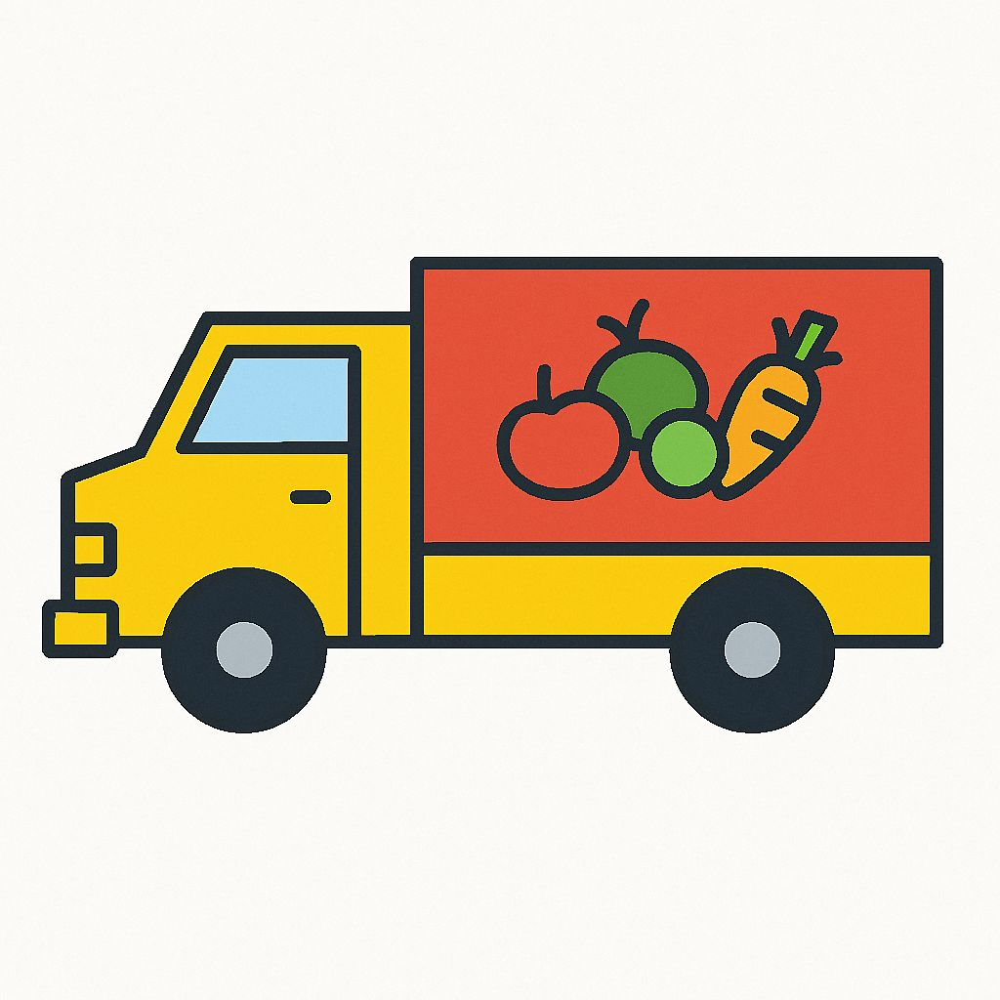
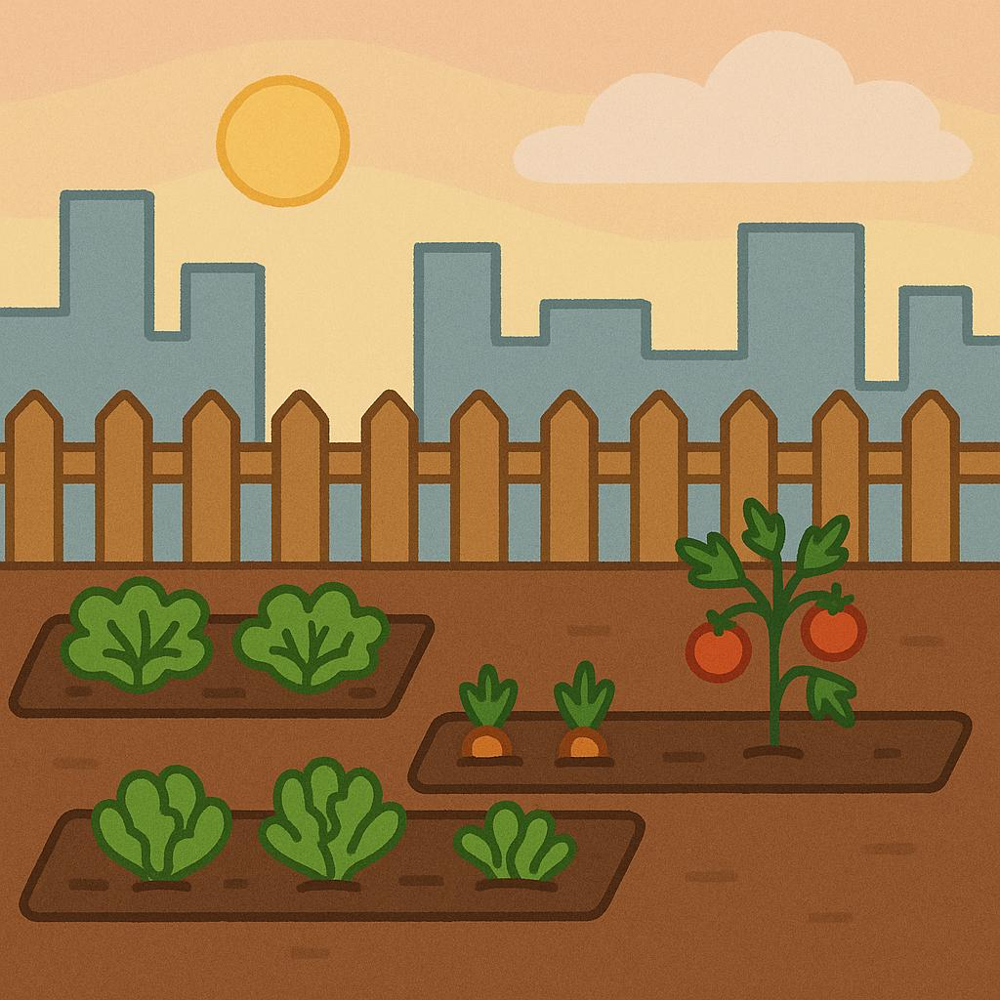
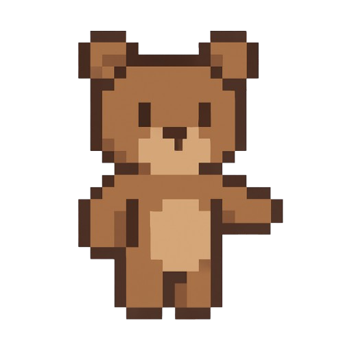

Sementeshorizonte-urbano
O que há de especial!

Estrada que conecta os ambientes

Paisagem rural e urbana

Ponto turístico

Passeio de balão Uma forma de festejar a conexão entre campo e cdade.
Você gosta de quizz?
Se a resposta for sim este é o lugar certo para você!
Teste para saber : gosta mais do campo ou cidade?
O que merece sua atenção!

onde o por do sol descansa

Caminhão de alimentos

Horta escolar

manifestação cultural da conexão do campo e a cidade
Trilhas caminhadas

Oi! Sou o Bear, vamos cultivar sua ideia?